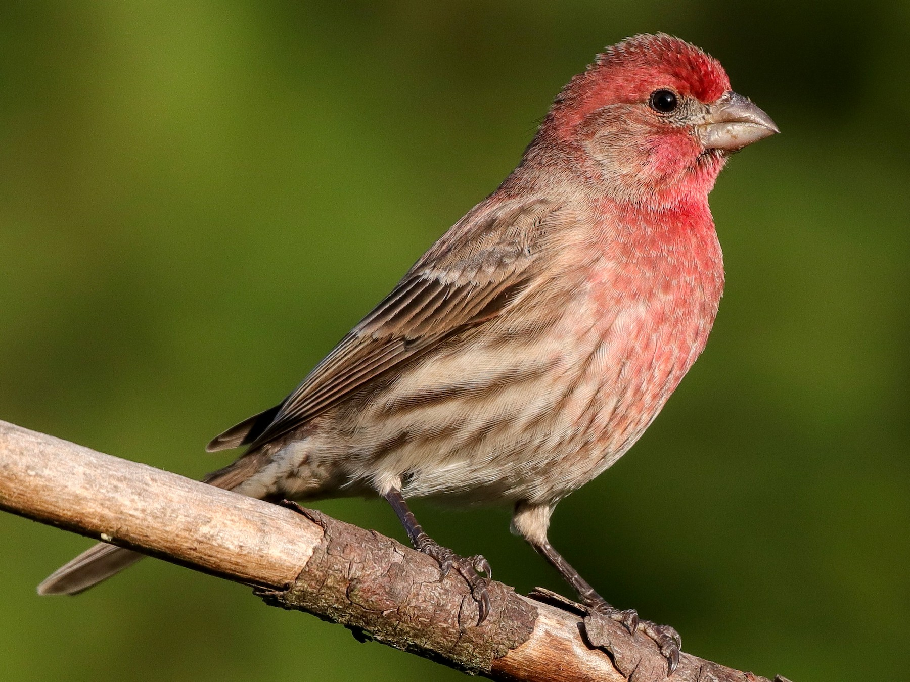
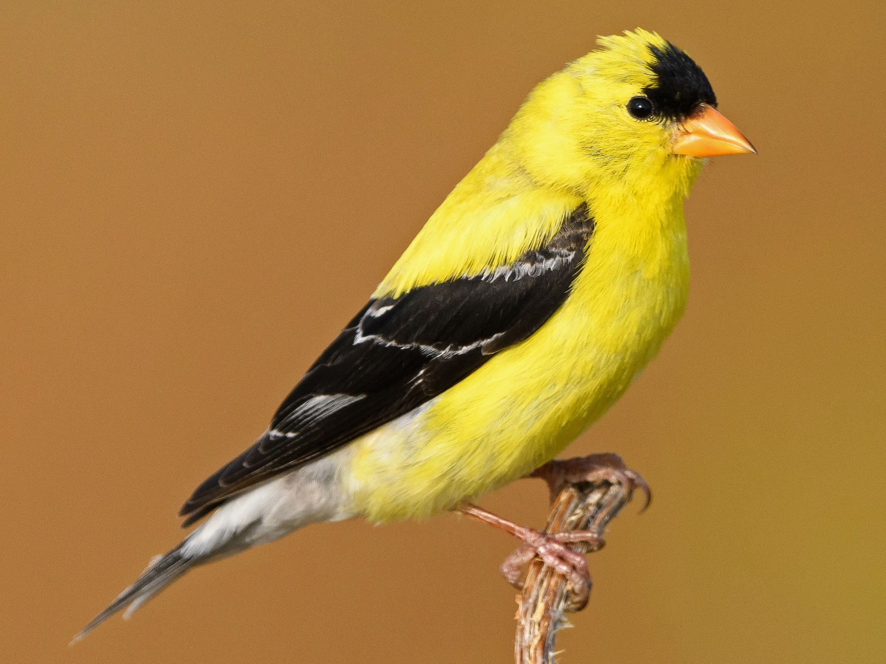
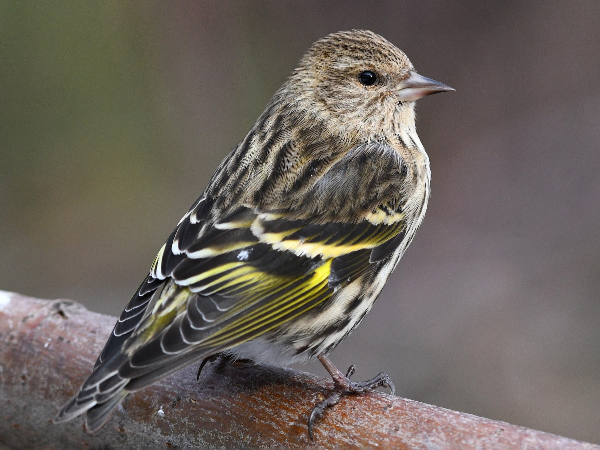
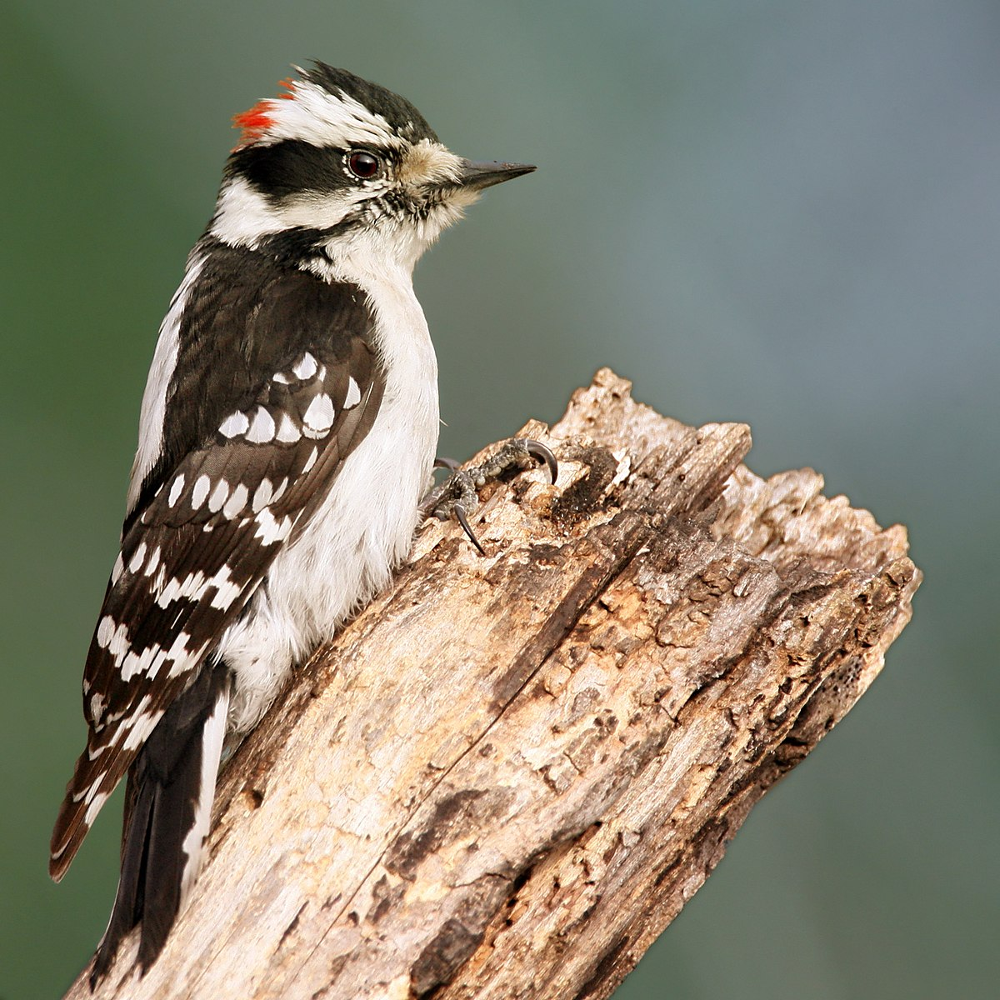
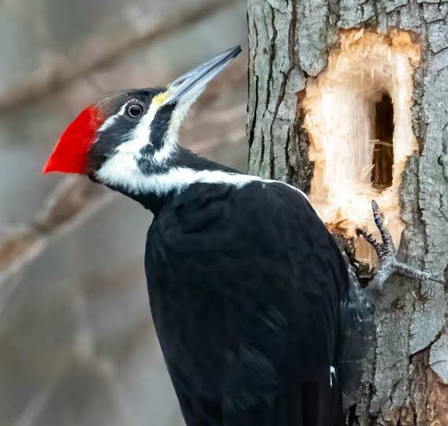
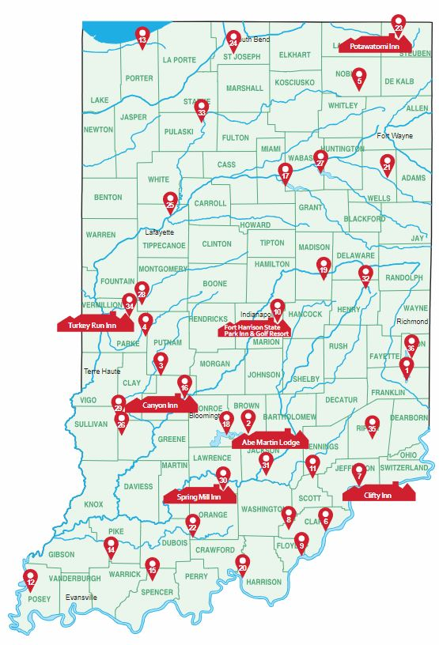

Finches

House Finch

Goldfinch

Pine Siskin
Learn more about finches!
The House Finch can be found in most neighborhoods in North America. They have a bright red head and chest. House Finches like to eat sunflower seeds.
The American Goldfinches are small, common finches that frequent weedy and brushy fields, second growth, parks, and backyards. Outside of the breeding season, they occur in small flocks and often visit feeders.
Pine Siskins are very small songbirds with sharp, pointed bills and short, notched tails. Their uniquely shaped bill is more slender than that of most finches.
Woodpeckers

Downy Woodpecker

Hairy Woodpecker

Pileated Woodpecker
Learn more about woodpeckers!
Downy Woodpeckers are small versions of the classic woodpecker body plan. They have a straight, chisel-like bill, blocky head, wide shoulders, and straight-backed posture as they lean away from tree limbs and onto their tail feathers.
Hairy Woodpeckers are contrastingly black and white. The black wings are checkered with white; the head has two white stripes (and, in males, a flash of red toward the back of the head). A large white patch runs down the center of the black back.
The Pileated Woodpecker is one of the biggest, most striking forest birds on the continent. It’s nearly the size of a crow, black with bold white stripes down the neck and a flaming-red crest.
